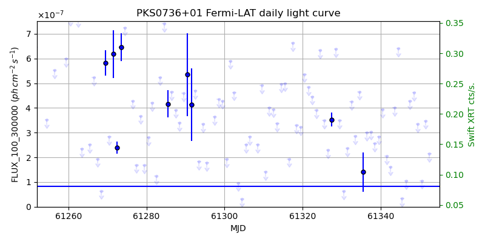
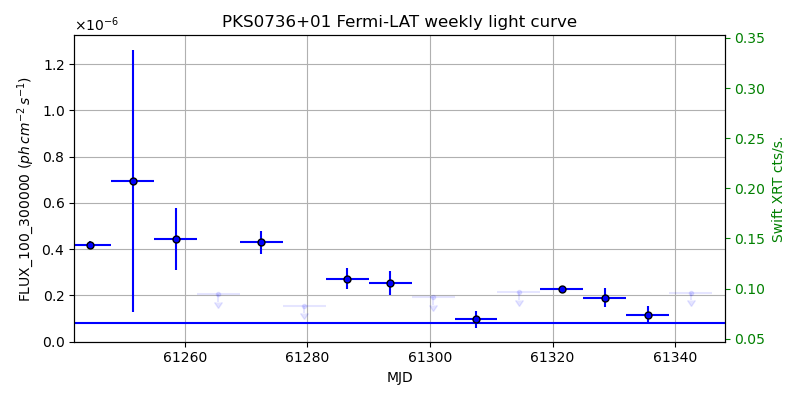
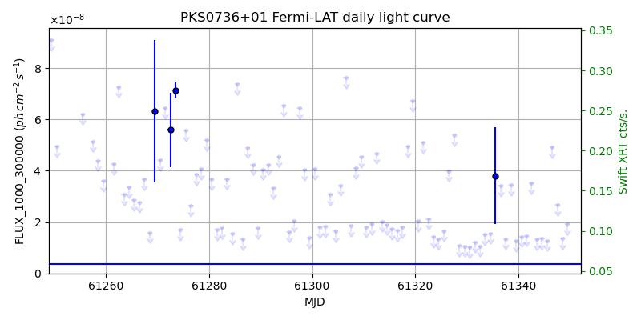
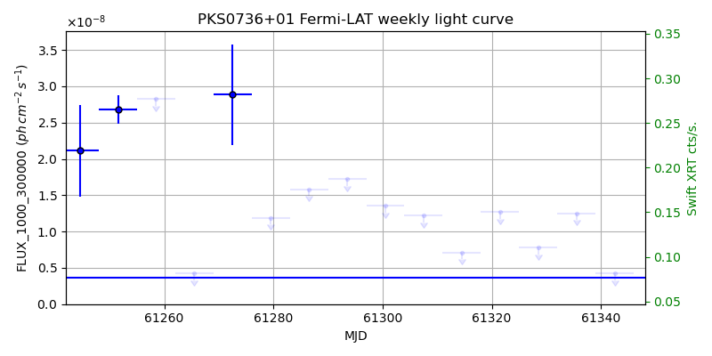

LAT Lightcurve site: https://fermi.gsfc.nasa.gov/ssc/data/access/lat/msl_lc/source/PKS_0736p01
Swift site: https://www.swift.psu.edu/monitoring/source.php?source=PKS0736+01
NED: Query
Time of last update of this page: UT: 2026-11-13 16:19 (MJD: 61357.680)
| Property | Value |
|---|---|
| R.A. | 7:39:18.00 |
| Dec. | 1:37:04.8 |
| z | 0.189 |
| 3FGL SpectrumType | LogParabola |
| 3FGL PL Index | |
| 3FGL Flux_100_300000 | 8.16e-08 1 / (s cm2) |
| 3FGL Flux_1000_300000 | 3.68e-09 1 / (s cm2) |
| 3FGL Flux >200 GeV | 1.72e-13 1 / (s cm2) |
| 3FGL Extrap. Crab >200 GeV | 0.00 |
| 3FGL Flux After EBL Absorption >200GeV | 1.06e-13 1 / (s cm2) |
| 3FGL EBL Crab Fraction >200GeV | 0.00 |

| MJD | dMJD | Flux | dFlux | Frac3FGL | FracCrab>200GeV | EBLFracCrab>200GeV |
|---|---|---|---|---|---|---|
| 61348.50 | 0.50 | 4.62e-07 | 0.00e+00 | 0.00 | 0.00 | 0.00 |
| 61349.50 | 0.50 | 3.34e-07 | 0.00e+00 | 0.00 | 0.00 | 0.00 |
| 61350.50 | 0.50 | 1.05e-07 | 0.00e+00 | 0.00 | 0.00 | 0.00 |
| 61351.50 | 0.50 | 3.48e-07 | 0.00e+00 | 0.00 | 0.00 | 0.00 |
| 61352.50 | 0.50 | 2.14e-07 | 0.00e+00 | 0.00 | 0.00 | 0.00 |

| MJD | dMJD | Flux | dFlux | Frac3FGL | FracCrab>200GeV | EBLFracCrab>200GeV |
|---|---|---|---|---|---|---|
| 61321.50 | 3.50 | 2.27e-07 | 1.24e-08 | 2.77 | 0.00 | 0.00 |
| 61328.50 | 3.50 | 1.91e-07 | 3.97e-08 | 2.34 | 0.00 | 0.00 |
| 61335.50 | 3.50 | 1.17e-07 | 3.66e-08 | 1.43 | 0.00 | 0.00 |
| 61342.50 | 3.50 | 2.13e-07 | 0.00e+00 | 0.00 | 0.00 | 0.00 |
| 61349.50 | 3.50 | 1.10e-07 | 0.00e+00 | 0.00 | 0.00 | 0.00 |

| MJD | dMJD | Flux | dFlux | Frac3FGL | FracCrab>200GeV | EBLFracCrab>200GeV |
|---|---|---|---|---|---|---|
| 61348.50 | 0.50 | 1.35e-08 | 0.00e+00 | 0.00 | 0.00 | 0.00 |
| 61349.50 | 0.50 | 1.91e-08 | 0.00e+00 | 0.00 | 0.00 | 0.00 |
| 61350.50 | 0.50 | 4.38e-08 | 0.00e+00 | 0.00 | 0.00 | 0.00 |
| 61351.50 | 0.50 | 1.54e-08 | 0.00e+00 | 0.00 | 0.00 | 0.00 |
| 61352.50 | 0.50 | 5.02e-08 | 0.00e+00 | 0.00 | 0.00 | 0.00 |

| MJD | dMJD | Flux | dFlux | Frac3FGL | FracCrab>200GeV | EBLFracCrab>200GeV |
|---|---|---|---|---|---|---|
| 61321.50 | 3.50 | 1.27e-08 | 0.00e+00 | 0.00 | 0.00 | 0.00 |
| 61328.50 | 3.50 | 7.81e-09 | 0.00e+00 | 0.00 | 0.00 | 0.00 |
| 61335.50 | 3.50 | 1.25e-08 | 0.00e+00 | 0.00 | 0.00 | 0.00 |
| 61342.50 | 3.50 | 4.22e-09 | 0.00e+00 | 0.00 | 0.00 | 0.00 |
| 61349.50 | 3.50 | 1.09e-08 | 0.00e+00 | 0.00 | 0.00 | 0.00 |
--------------------------------------------------------- Using user-supplied coords: 7:39:18.00 1:37:04.8 2000 --------------------------------------------------------- FLWO UT night of: 2026-11-14 Local Sid. @ Midnight: 03:09 Sunset (-15.0) (local, UT): 18:35 01:35 Sunrise (-15.0) (local, UT): 05:42 12:42 Moonrise (local, UT): Moonset (local, UT): 20:50 03:50 Moon phase: 0.22 --------------------------------------------------------- AzTime LSID UT Obj_el Obj_az Mn_el Mn_az Sep. --------------------------------------------------------- 18:35 21:44 01:35 -45.7 47.2 20.1 218.2 153.2 19:05 22:14 02:05 -40.8 55.0 16.0 223.7 153.4 19:35 22:44 02:35 -35.3 61.6 11.6 228.6 153.5 20:05 23:14 03:05 -29.5 67.3 6.9 233.2 153.7 20:35 23:44 03:35 -23.5 72.3 2.0 237.3 153.8 21:05 00:14 04:05 -17.4 76.9 -2.2 241.2 154.0 21:35 00:44 04:35 -11.1 81.2 -9.0 244.8 154.1 22:05 01:14 05:05 -3.6 85.2 -14.6 248.2 154.3 22:35 01:44 05:35 2.0 89.2 -20.4 251.4 154.4 23:05 02:14 06:05 8.2 93.2 -26.2 254.5 154.6 23:35 02:44 06:35 14.5 97.2 -32.1 257.5 154.8 00:05 03:14 07:05 20.8 101.5 -38.1 260.6 154.9 00:35 03:45 07:35 27.0 106.1 -44.2 263.8 155.1 01:05 04:15 08:05 33.0 111.3 -50.2 267.1 155.3 01:35 04:45 08:35 38.9 117.1 -56.3 270.9 155.4 02:05 05:15 09:05 44.4 124.0 -62.4 275.3 155.6 02:35 05:45 09:35 49.4 132.2 -68.4 281.1 155.7 03:05 06:15 10:05 53.8 142.0 -74.2 289.9 155.8 03:35 06:45 10:35 57.2 153.9 -79.6 306.2 156.0 04:05 07:15 11:05 59.3 167.6 -83.2 343.5 156.1 04:35 07:45 11:35 59.9 182.5 -82.1 35.1 156.2 05:05 08:15 12:05 58.8 197.1 -77.4 61.2 156.3 05:35 08:45 12:35 56.2 210.2 -71.8 73.4 156.4 05:42 08:52 12:42 55.5 212.8 -70.5 75.2 156.4 --------------------------------------------------------- Dark hours >55 deg.: 2.45 srcstart (UT): 2026-11-14 10:14 srcend (UT): 2026-11-14 12:41